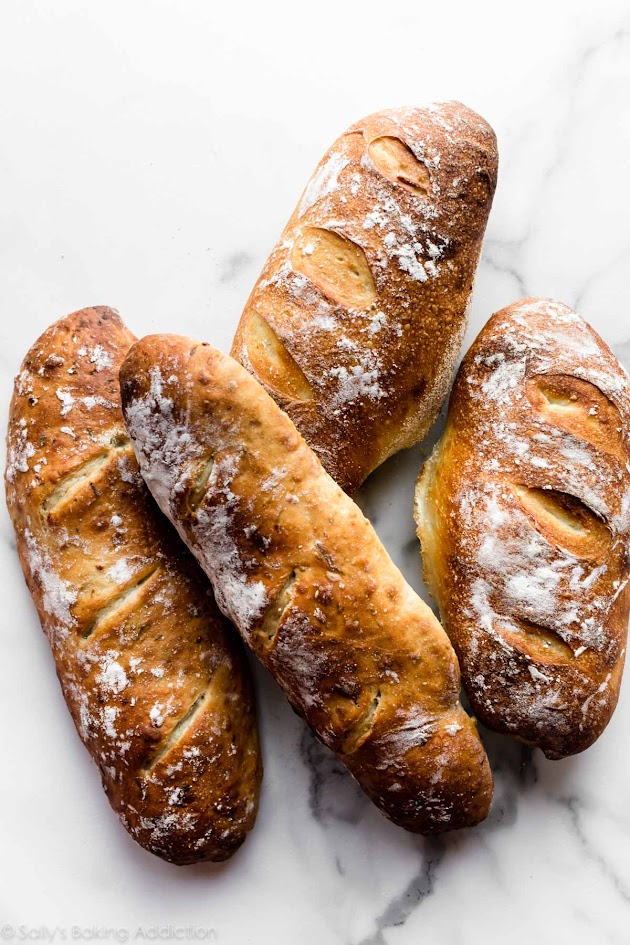

domaći kruh je jedan od najednostavnijih recepata koji možemo pripremiti kod kuće. Potrebno je samo nekoliko osnovnih sastojaka, malo vremena i strpljenja
količina vode može se malo prilagoditi ovisno o vrsti brašna. omjer vodde i brašna može se zapisati kao voda / brašno
za ovaj recep koristimo približno 60% vode u odnosu na količinu brašna

Temperatura pečenja može biti oko 220oC. Vrijeme pečenja ovisi o veličini kruha
tjesto treba biti lagano i ljepljivo. Ako je tjesto pretvrdo, potrebno je dodati malo vode, Ako je previše ljepljivo, može se dodati mala količina brašna
ako želite naučiti više o pečenju kruha, posjetite stranicu o kruhu
kemiska formula vode je H2O, a temperatura od 100oC predstavlja približnu temperaturu vrelišta vode pri normalnom atmosferskom tlaku
jednostavan postupak za provjeru je: umjesi - ostavi - oblikuj - ispeci